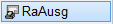
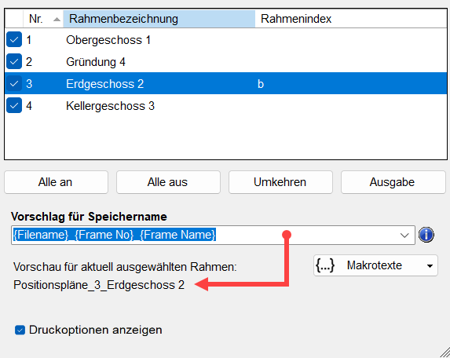
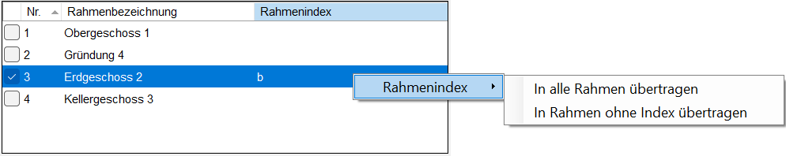
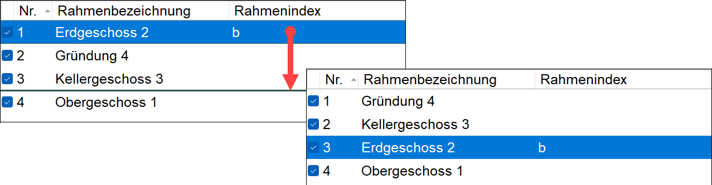
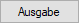
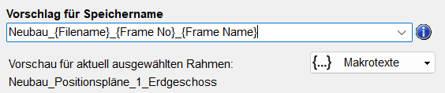
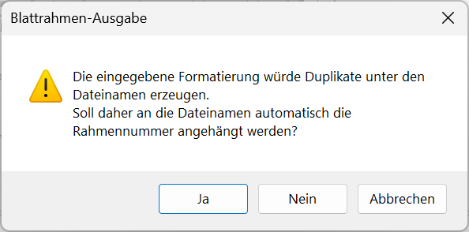

Drucken oder Plotten eines oder mehrerer definierter Blattrahmen auf dem unter WINDOWS® eingestellten Standarddrucker.
Wenn Sie mehrere Blattrahmen mit der Funktion [RaEinf] auf der Zeichnung platziert haben, können Sie sie mit dieser Funktion sequentiell unter einem variablen oder manuell eingetragenem Speichernamen ausgeben.
Optionen im Dialog "Welches Blatt"
 |
Checkbox
Aktivieren Sie den oder die zu druckenden Blattrahmen, indem Sie einen Haken in die Checkbox setzen oder diesen entfernen. Wenn Sie im Dialog eine Zeile anklicken, wird der entsprechende Blattrahmen in der Zeichnung hervorgehoben.
Nr.
Wird automatisch beim Einfügen der Blattrahmen vergeben.
Rahmenbezeichnung
Beim Einfügen der Blattrahmen können Sie die Rahmenbezeichnung frei wählen. Um die Rahmenbezeichnung zu bearbeiten, doppelklicken Sie den Eintrag an und tippen Sie eine neue Bezeichnung ein.
Rahmenindex
Hier können Sie eine zusätzliche Information eingeben. Um den Rahmenindex zu bearbeiten oder einen einzutragen, doppelklicken Sie den Eintrag in der Spalte Rahmenindex an und tippen Sie eine neue Bezeichnung ein.
Ein Rechtsklick auf einen markierten Eintrag öffnet ein Kontextmenü, in dem Sie folgende Möglichkeiten haben:
·In alle Rahmen übertragen: Überträgt den markierten Index in alle Zellen der Spalte Rahmenindex. Vorhandene Einträge werden dabei durch den markierten Index überschrieben. Wenn Sie einen leeren Eintrag markieren, werden alle Einträge in der Spalte Rahmenindex entfernt.
·In Rahmen ohne Index übertragen: Überträgt den markierten Index in alle Zellen der Spalte Rahmenindex, die keinen Rahmenindex-Eintrag enthalten.
 |
Blattrahmen sortieren
Klicken Sie eine Spaltenüberschrift an, um die Inhalte auf- oder absteigend zu sortieren. Die Rahmen-Nr. beeinflusst die Reihenfolge der Ausgabe und ist immer fortlaufend. Wenn Sie die Spalte Nr. absteigend sortieren (4, 3, 2, 1) wird der Blattrahmen Nr. 4 zuerst ausgegeben.
Sie können die Reihenfolge der Ausgabe ändern, indem Sie zunächst die Spalte Nr. aufsteigend sortieren (1, 2, 3, 4 usw.). Anschließend klicken und halten Sie die linke Maustaste auf einer Rahmenbezeichnung oder einem Rahmenindex gedrückt, und ziehen Sie die Zeile an eine andere Position. Eine schwarze Linie zeigt Ihnen dabei die Einfügeposition an.
 |
Schaltflächen
Aktiviert alle Blattrahmen. |
|
Deaktiviert alle Blattrahmen. |
|
Kehrt die Auswahl um. |
|
 |
Startet die Druckausgabe. |
Vorschlag für Speichername
Eingabe des Speichernamens. Die Blattrahmen werden sequentiell ausgegeben. Dabei wird jeder Blattrahmen unter dem hier eingetragenen Speichernamen gespeichert.
-Bereits verwendete Speichernamen können durch das Aufklappen der Dropdown-Liste  ausgewählt werden.
ausgewählt werden.
-Unter dem Eingabefeld wird Ihnen der Speichername des markierten Blattrahmens als Vorschau angezeigt.
 |
|
Gibt an, dass in der Eingabe mindestens ein Makrotext enthalten ist. Sie können weitere Makrotexte hinzufügen, indem Sie auf die Schaltfläche {...} Makrotexte klicken, und einen per Mausklick auswählen. Der Makrotext wird an die Cursorposition gesetzt. |
|
Gibt an, dass in der Eingabe Makrotexte verwendet werden, die nicht im Makrotext-Editor definiert sind. Fahren Sie mit der Maus über das Symbol, um sich die fehlenden Makrotexte anzeigen zu lassen. Sie können die fehlenden Makros im Makrotext-Editor definieren oder über die Schaltfläche {...} Makrotexte durch bestehende ersetzen. |


{...} Makrotexte
Öffnet eine Liste mit den verfügbaren benutzerdefinierten und dynamischen Makrotexten. Klicken Sie einen Eintrag an, um ihn an die Cursorposition im Eingabefeld zu setzen. Um in der Liste zu scrollen, klicken Sie den Pfeil an der oberen oder unteren Listenkante an. Wenn Sie die Maustaste auf einem Pfeil gedrückt halten, wird automatisch gescrollt.
Meldung bei identischen Speichernamen
Sollten sich bei der Dateiausgabe zwei oder mehrere gleiche Speichernamen ergeben, werden Sie in einer Meldung darauf hingewiesen.
 |
Ja |
Startet die Ausgabe. Der Speichername wird um die Rahmen-Nr. erweitert und beim Speichern vorgeschlagen. Ein Unterstrich wird automatisch hinzugefügt, z. B. Neubau_1, Neubau_2 usw. |
Nein |
Startet die Ausgabe. Bei jedem Blattrahmen wird derselbe Speichername vorgeschlagen. Bearbeiten Sie den Speichernamen, um die vorherige Ausgabe nicht zu überschreiben. Je nach verwendetem PDF-Drucker können verschiedene Optionen zur Verfügung stehen, um das Überschreiben zu vermeiden. |
Abbrechen |
Bricht die Aktion ab. |
Druckoptionen anzeigen
Diese Option ist nur verfügbar, wenn Sie im Dialog Plotter-Konfiguration die Ausgabe im PDF-Format gewählt haben. Öffnet vor dem Speichern eines jeden Blattrahmens den Dialog ISBCAD Druckoptionen.